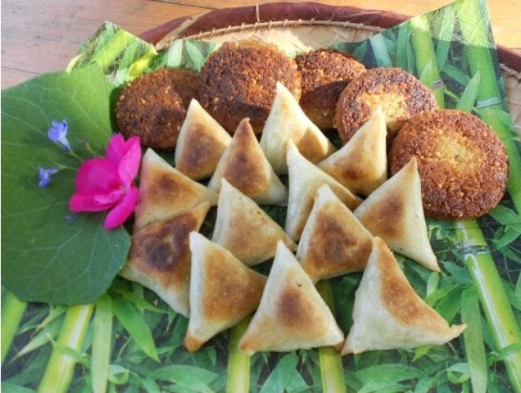
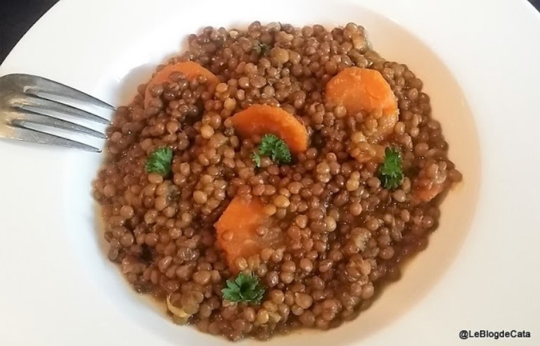

Plats Réunionnais
| Plat | Description | Prix | |
| samoussas |  | Originaire d’Asie et du Moyen-Orient, le samoussa est un triangle de feuilles de brick garni d’une farce à la viande ou aux légumes, qui fait croustiller les entrées et les apéritifs. Cette recette au bœuf haché, tomates et petits pois puise dans les influences indiennes, avec des condiments aussi parfumés que le curry, le gingembre et la coriandre. | 9 |
| lentilles |  | La lentille de Cilaos est une variété de lentilles cultivée sur l'île de La Réunion. Comme son nom l'indique, elle est produite dans le cirque naturel de Cilaos, où sa culture est traditionnelle. Elle est de petite taille et traditionnellement servie avec du riz. Son goût unique et ses nombreux bienfaits en font un produit d'exception de la Réunion.Produit du Terroir Réunionnais. | 13 |